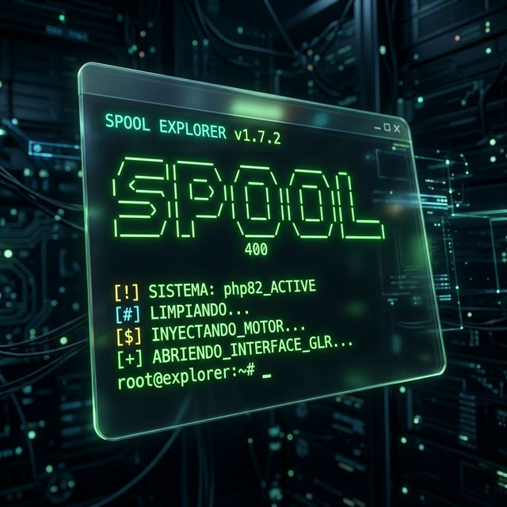
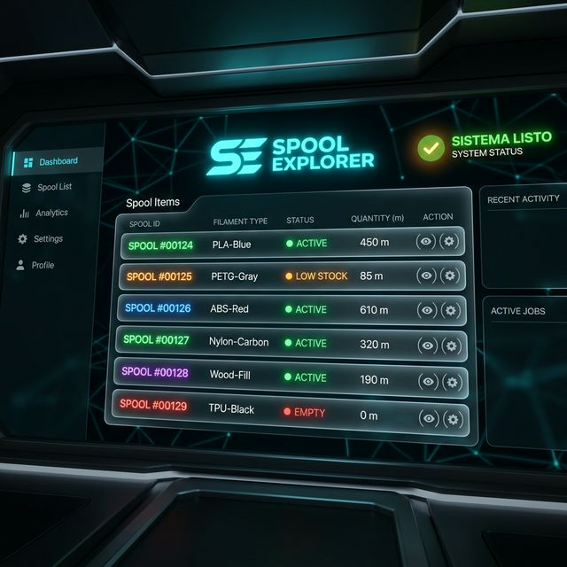

Instalación Automática
Puesta en marcha en un solo clic. El sistema configura automáticamente tu entorno y acceso directo con icono profesional.
Instantáneo
No requiere registro ni configuración manual de base de datos.
Icono Propio
El acceso directo se vincula automáticamente con el icono oficial.
Portable
Puedes llevar tu instalación completa en un USB y funcionará igual.
Copia y Lanza
Copia la carpeta AS400_Portable_Libre a cualquier ubicación y ejecuta Iniciar_Servidor.bat.


Icono en Escritorio
Al primer inicio, el sistema crea un acceso directo llamado Spool en tu escritorio.
- Icono Premium: Portapapeles azul oficial.
- Configuración: Rutas absolutas inteligentes.
- Persistencia: No necesitas volver a abrir el .bat manual.
¿Problemas al Iniciar?
En equipos Windows recién instalados, es posible que falte un componente de Microsoft.
Aparece si faltan las librerías C++. El programa te preguntará si deseas instalarlas presionando S.
También puedes ejecutar directamente VC_redist.x64.exe ubicado en la raíz.
¡Sistema Listo!
Tu aplicación se abrirá sola. Úsala siempre desde tu escritorio para la mejor experiencia.